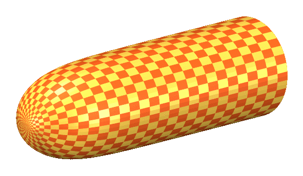

Home
FBMS of genus zero
FBMS with connected boundary
FBMS with three boundary components
Geometric flows
Publications
Contact
© Mario B. Schulz
Geometric flows on surfaces
mean curvature flow
isometric embedding of a Yamabe flow
pinching of a catenoidal soap film by mean curvature flow

cigar soliton